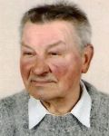

Help! Looking for people
Proceed to missing and NN
Have you seen someone missing?
Małgorzata Horodyska
Mirosław Zenon Chmielowski
Radosław Zbigniew Ujma
Robert Kuś
Ireneusz Pietrzak
Ariel Hawryszko
Bogusław Szczechura
Stanisław Józef Laskowski
Łukasz Rafał Chęciński
Wiesława Bartosik
Help us find them – search through our database, print out a poster and contact us if you possess any information regarding missing people. Perhaps you have walked past a missing person or seen one in a bus, the tube or a zebra crossing.
It is important to remain cautious, even outside Poland. Our database consists of images and information about people that have been declared missing to appropriate services and ITAKA foundation, both in Poland and abroad.
See Missing People DatabaseDo you recognise any of them?
kobieta NN z Moszczan
kobieta NN ze Stężycy
mężczyzna NN z Cieszyna
kobieta NN z Janowca Wlkp.
mężczyzna NN z Międzybrodzia Żywieckiego
(Unknown Identity)
ITAKA is also dedicated to help those who lost their identity due to unforeseen incidents – e.g. an accident or disease. Go through our database and look for familiar faces. If you recognise your former neighbour, a family member or a friend – contact us. There might be people looking for that person.
Identify an NN personSupport ITAKA's cause
The 116 000 helpline for missing children and youth is co-financed from the EU Funds as a part of European Union’s Daphne Programme.
Projekt pt. „Opracowanie systemu rozwiązań prawnych, instytucjonalnych i informatycznych służących usprawnieniu poszukiwań, identyfikacji oraz wsparciu bliskich osób zaginionych” finansuje Narodowe Centrum Badań i Rozwoju w ramach programu Gospostrateg „Społeczny i gospodarczy rozwój Polski w warunkach globalizujących się rynków”
 Polski
Polski English
English